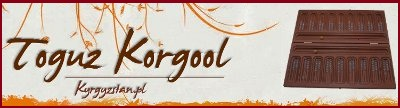

Онлайновый мир настольных логических игр igGameCenter
Заметки государственного тренера Республики Казахстан Дастана Исатаевича Капаева
Ресурс немецкого энтузиаста игры Ральфа Геринга (Ralf Gering)
Сайт Гульзат Кокоевой, посвященный кыргызской игре Тогуз Коргоол

Сайт чешской федерации тогызкумалака (Hana Kotinova)